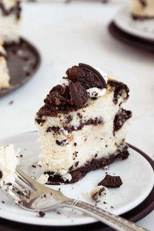

Oreo Cheesecake

This is a recipe that I found online and then modified to make it less work.
If you are a cheesecake person, it is hard to go wrong with this recipe.
Ingredients
- 18 oreos (6 for the filling, 12 for the base)
- (375 g) 1.5 cups of cream cheese
- (125 g) 0.5 cups sugar
- (100 ml) 0.3 cups of sour cream
- (15 ml) 1 tbsp of vanilla
- 1 egg (optional)
- (4 g) a pinch of salt if you're feeling devilish
Steps
- Thaw out the cream cheese and put into a bowl (needs to be soft for
mixing)
- Add sugar and sour cream and mix.
- Add vanilla and egg if you so choose. Mix.
- Add a pinch of salt and mix.
- Crush up 6 oreos in your hands (break in quarters if you don't want
messy hands). Fold into the rest of the mixture (only mix a bit).
- Lay 12 oreos in a 3x4 pattern on a pan with parchment paper and evenly
pour the mixture over it.
- Bake at 275 F for 12 mins to crisp it up a bit. Helps with texture.
Makes 12 servings. I made these for a work potluck one time and I felt like
a meth dealer for my coworkers. Be sure to share them or you will get type 2
diabetes.